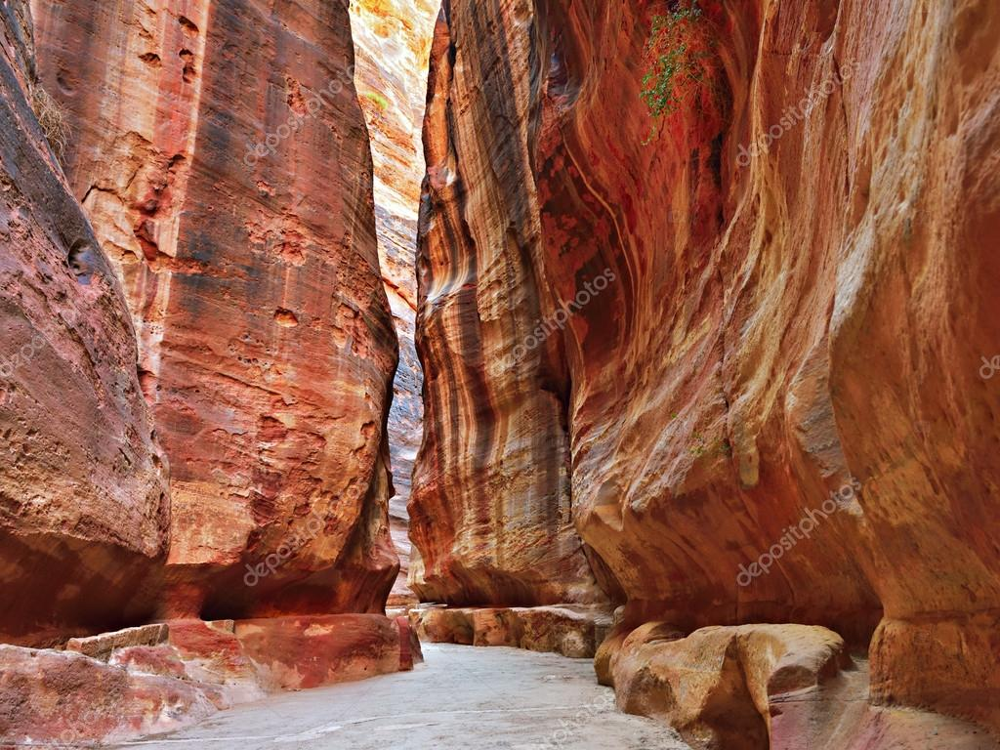

THE MOST IMPORTANTS MONUMENTS

Petra is a historic city in Jordan, famous for its stone-carved buildings and for being one of the main tourist attractions in the region. It was built around the 6th century BC by the Nabataeans, an Arab tribe that controlled the caravan route between Arabia, Egypt, and Syria. During its heyday, Petra was an important commercial and religious center, and its inhabitants built numerous impressive buildings and monuments.
The city was abandoned in the 7th century and remained hidden in the desert for centuries until it was rediscovered by the Swiss explorer Johann Ludwig Burckhardt in 1812.
Petra boasts numerous impressive monuments and buildings, many of which are carved into the rock. Among the most prominent places to visit are: